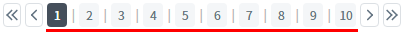

[PageList] 페이지 숫자 사이에 구분자 사용하기
1개요
PageList의 'useDelim' 속성과 'delimiter' 속성을 사용하여 페이지 숫자 사이에 구분자를 표시한 예제입니다.
아래는 예제에서 사용한 속성과 설명입니다.
useDelim: [default:false, true] 구분자 사용 여부.
delimiter: 구분자로 사용할 문자열.
추가 속성을 통해 구분자의 이미지, 스타일, 너비를 지정할 수 있습니다.
2구현된 기능
숫자 사이에 구분자 표시하기
숫자 사이에 구분자 표시하지 않기
3예제 테스트 방법
3.1숫자 사이에 구분자 표시하기
1
실행된 결과를 확인합니다.
예제 영역 '숫자 사이에 구분자 표시하기'의 'PageList'를 확인합니다.
페이지 문자열 사이에 구분자 '|'가 표시됩니다.Image 1.브라우저(Chrome) 실행 예시

3.2숫자 사이에 구분자 표시하지 않기
1
실행된 결과를 확인합니다.
예제 영역 '(기본 설정) 숫자 사이에 구분자 표시하지 않기'의 'PageList'를 확인합니다.
페이지 문자열 사이에 구분자가 표시되지 않습니다.Image 2.브라우저(Chrome) 실행 예시

4구현 예시
4.1속성으로 숫자 사이에 구분자 표시하기
1
속성을 정의합니다.
[필수] useDelim="true"
구분자 표시를 사용합니다.
(옵션 설명)
- "false": [default] 구분자를 표시하지 않습니다.
- "true": 구분자를 표시합니다.
[필수] delimiter="구분자 문자열"
화면에 표시할 구분자 문자열. 이미지를 사용할 경우 속성 'deliImage'을 사용합니다.
설정 예시) delimiter="|"
[선택] deliImage
구분자 영역에 표시할 이미지 경로. CSS 속성 'background-image'을 사용하며 'url'에 할당됩니다.
style 생성 예시) "background-image:url(" + 속성 설정 값 + ");"
설정 예시) deliImage="/img/icon_exam.png"
[선택] deliImageStyle
구분자 영역에 적용할 style을 정의합니다.
설정 예시) deliImageStyle="color:#bbb; font-size:0.9em;"
5주요 API
useDelim
delimiter
deliImage
deliImageStyle